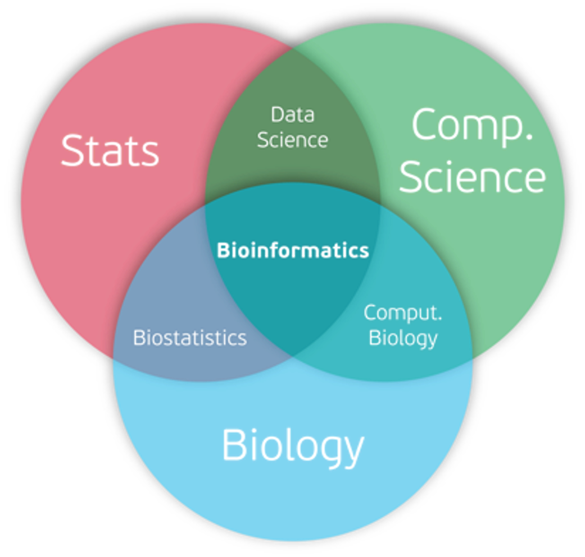

Reading Genomes: A Companion to Bioinformatics and Genome Analysis
Preface
This companion textbook is a draft teaching resource created specifically for students enrolled in BIOL 5860/6860: Bioinformatics and Genome Analysis at Auburn University during the Spring 2026 term. The content integrates instructor-written material, published references, and AI-assisted drafting that has been reviewed and edited for use in this course, with sources and AI assistance acknowledged.
Why This Course? Why This Book?
This companion textbook supports BIOL 5860/6860: Bioinformatics and Genome Analysis, a hands-on survey of computational approaches to “reading” biological data. As biologists with genetics and computational biology prerequisites, you already know how to frame biological questions and wrangle basic code. This course builds directly on that foundation to demystify the “black box” of bioinformatics tools, showing you how to move from raw sequencing data to biological insight. We will also read primary scientific literature, which you are expected to be familiar with. If you need a refresher, please refer to Appendix A.
The field moves fast—back when I was in graduate school, I first learned 454 sequencing and applied it to my PhD work, which is now long obsolete. Rather than teaching specific tools that may change by graduation, this book emphasizes adaptability: the core concepts, file formats, quality control practices, and workflow thinking that transfer across platforms and projects. Labs progress from exploratory (“find a genome paper on your favorite organism”) to practical (GATK variant calling on HPC) to independent (semester-long group research projects where you discover and master new tools yourselves).
Who This Book Serves
This resource targets our diverse class:
Pre-med and future genetic counselors: Clinical relevance through variant interpretation, population genetics, and ethical considerations in human genomics.
Graduate students and researchers: Practical pipelines, reproducibility best practices, and project management skills for real analyses.
All students: Demystification of the “hidden curriculum”—writing reproducible workflows, applying for funding, and participating in grant review panels.
While a pre-requisite of Genetics is required, no prior genomics experience is required. Similarly, the prerequisite of BIOL 5800/6800 ensures that everyone can keep pace with Linux, R, git, and basic scripting.
How Does Computational Biology Differ from Bioinformatics

Having taken a course in Computational Biology, it can often be confusing of the specific distinction between the various fields and how to define each.
This figure shows how bioinformatics lies at the interface of statistics, computer science, and biology, integrating methods from all three disciplines to analyze and interpret biological data. This Figure highlights how related subfields overlap: biostatistics emerges from the intersection of statistics and biology, computational biology from the overlap of computer science and biology, and data science from the overlap of statistics and computer science. At the center, bioinformatics combines these quantitative, computational, and biological approaches under one umbrella.
Importantly, how we define biology in this course is broadly emcompassing all fields of empirical research. This would include biology, biomedical research, such as pharamcology, kinesiology, and veterinary sciences. Image Source
{kind=link}
Student Learning Objectives
Upon completion of the course, you should be able to:
- Interpret data formats and quality of:
- raw genome sequence data
- sequence alignments
- genetic variants
- Conduct genomic analysis using best practice pipelines
- Analyze data using R and various bioinformatics tools
- Critically evaluate genome analysis study designs
- Be able to describe in depth the basic analysis for a variety of data types
- Develop proficiency in scientific communication skills and reproducibility of research
Labs and Projects as a parallel track
Throughout the semester, you will encounter two recurring threads:
- A comparative genomics project (Appendix B) that applies the skills you are learning to a real research question.
- A yeast genomics dataset (Labs 4, 7, 9; Appendix C) that takes you from FASTQ → BAM → VCF → IGV.
Each chapter includes “Lab connections” callouts that point to relevant labs and appendices, so you can cross‑reference concepts, commands, and datasets as you work.
Semester Schedule
| Week | Date | Class topic | Primary readings | Description | Assessments |
|---|---|---|---|---|---|
| 1 | 8 Jan | Course overview and state of the field | Chapter 1; Readings:1,2; Appendix A | Big‑picture framing of course. | Start Lab 1 |
| 2 | 13 Jan | What is a genome analysis? | Chapter 2; Reading:3 | Sequencing platforms | Start Lab 2 |
| 15 Jan | Intro to NGS data and data QC | Chapter 3 | Genomics File Formats | ||
| 3 | 20 Jan | Intro to semester‑long research project | Appendix B | Project framing and expectations. | |
| 22-Jan | Lab day – Genome browsers | Chapter 4 | Explore different browsers and customizations | Lab 3 | |
| 4 | 27-Jan | Pairwise & multiple sequence alignment | Chapter 5 | Intro to pairwise/MSA concepts | |
| 29-Jan | Genome sequence alignment | Chapter 6 | Scaling alignment concepts and algorithms | ||
| 5 | 3-Feb | Project management & writing methods in bioinformatics | Chapter 7 | Hidden curriculum emphasis | GP Step 1 Due |
| 5-Feb | Lab day – Indexing, alignment, and assessment | Appendix C | Introduce yeast dataset and practical application | Lab 4 | |
| 6 | 10-Feb | Genome assembly guest lecture | Chapter 6 | Algorithms and case studies | |
| 12-Feb | Lab day – BLAST on the command line | Chapter 5 | BLAST concepts and practice on the HPC | Lab 5 | |
| 7 | 17-Feb | Various genome analysis workflows | Chapter 8 | Multi-omics workflows and human case studies | Meet with Dr. S |
| 19-Feb | Lab day – HMMs for gene annotation | Chapter 9; Reading:4 | HMM intuition and gene‑finding | Lab 6 | |
| 8 | 24-Feb | Intro to variant calling/filtering | Chapter 10 | From alignment to variants using GATK | |
| 26-Feb | Midterm Exam | In class conceptual exam | Assessment of Chapters 1-7; Labs 1-5; Appendices A-C | Exam | |
| 9 | 3-Mar | Lab day – Variant filtering and QC | Chapter 10; Appendix C | Practical filtering and interpretation | Lab 7; GP Step 2 Due |
| 5-Mar | Beyond GATK: LLMs and other Variant Calling Approaches | Chapter 10; Assigned Readings:5–9 | In depth comparison of variant calling methods | Lab 8; Annotation Report Due | |
| 10 | 10-Mar | Spring break – no class | — | No assigned reading | |
| 12-Mar | Spring break – no class | — | No assigned reading | ||
| 11 | 17-Mar | Open lab – group project work | Appendix B | Execute Bioinformatics Plan and Setup GitHub | GP Step 3 Grad Assignment |
| 19-Mar | Lab Day – Visualizing Genetic Variants | Chapter 10; Appendix C | Visualizing variants in genome viewers | Lab 9 | |
| 12 | 24-Mar | How Science is Funded? – Grant Funding & Review Process | Chapter 11 | Hidden curriculum emphasis | |
| 26-Mar | Population genomics | Chapter 12 | Human evolutionary genomics | GP Step 4 Due | |
| 13 | 31-Mar | Lab day – Human Population Genetics | Chapter 12 | Hands‑on diversity and divergence analysis | Lab 10 |
| 2-Apr | Genome scans & sliding‑window analysis | Chapter 12 | Outlier scans, patterns of selection, and case studies | Proposal Reviews Due | |
| 14 | 7-Apr | Grant panel day 1 | Chapter 11 | In‑class panel and critique | Mock Grant Panel |
| 9-Apr | Grant panel day 2 | Chapter 11 | In‑class panel and critique | Mock Grant Panel | |
| 15 | 14-Apr | Sequence motifs | Chapter 13 | Finding sequence motifs in genomes | Panel Summary Due |
| 16-Apr | Open lab – group project work | Appendix B; Chapter 14 | Project‑oriented application of course content | ||
| 16 | 21-Apr | Final Exam | In class conceptual exam | Review of Chapters 8-14; Labs 6-10 | Exam |
| 23-Apr | Open lab – group project work | Appendix B; Chapter 14 | Project‑oriented application of course content | GP Step 5 Due | |
| 17 | 1-May | Final group presentations (10:30–12:30) | Appendix B | Capstone, reflections, and next steps | GP Step 6-7 Due |
Key Dates
Schedule shown is for Spring 2026 at Auburn University; adapt as needed. | Assignment | Description | Due Date | Points | Percent course completed | |—|—|—|—|—| | Lab 1 | Find and describe a genome analysis paper | 15-Jan | 25 | 3% | | Lab 2 | Design a Genome Project | 23-Jan | 25 | 6% | | Lab 3 | Genome Browsers | 29-Jan | 25 | 9% | | GP Step 1 | Project Overview | 3-Feb | 20 | 12% | | Lab 4 | Genome Alignment/Indexing | 12-Feb | 25 | 15% | | Lab 5 | BLAST on the command line | 19-Feb | 25 | 18% | | GP Meeting | Meet with Dr. Stevison to discuss research plan | 20-Feb | NA | 18% | | Lab 6 | HMMs for gene annotation | 26-Feb | 25 | 21% | | Midterm | Exam on Chapters 1-7 | 26-Feb | 100 | 33% | | GP Step 2 | Detailed Bioinformatics Plan | 2-Mar | 30 | 36% | | Annotation Project | Manual Gene Annotation Report | 6-Mar | 100 | 48% | | Lab 7 | Variant Calling and Filtering | 10-Mar | 25 | 52% | | Lab 8 | Variant Calling Discussion | 12-Mar | 25 | 55% | | Grad Assignment | Guide for a bioinformatics tool! | 16-Mar | NA | 55% | | GP Step 3 | GitHub Repo with Prelim analysis | 23-Mar | 10 | 56% | | Lab 9 | IGV and Genome Viewers | 26-Mar | 25 | 59% | | GP Step 4 | Peer Review of Step 3 | 27-Mar | 20 | 61% | | Panel Review | Mock Panel Reviews (due BEFORE panel) | 3-Apr | 20 | 64% | | Lab 10 | FST, Tajima’s D and Diversity Scans | 7-Apr | 25 | 67% | | Panel Discussion | Panel Discussion and Participation IN CLASS | 7-Apr | 30 | 70% | | Panel Summary | Detailed Summary of Panel Discussion | 14-Apr | 25 | 73% | | Final Exam | Exam on Chapters 8-14 | 21-Apr | 100 | 85% | | GP Step 5 | Final GitHub Repository | 24-Apr | 50 | 92% | | GP Step 6 | Final Presentation | 1-May | 50 | 98% | | GP Step 7 | Peer Review of Step 6 | 1-May | 20 | 100% |
*Note: The above schedule and these deadlines are subject to change.
Final Note to Students
Bioinformatics feels like magic until you see the patterns: every pipeline starts with QC, every analysis needs reproducibility, every grant needs a clear workflow. By semester’s end, you’ll not only run these analyses but build the confidence and comfort to explain them to collaborators, reviewers, and future employers.
Let’s read some genomes together.
Dr. Laurie Stevison - Your Steward in Genomics December 2025
How to Cite This Book
Stevison, L. (2026). Reading Genomes: A Companion to Bioinformatics and Genome Analysis (v1.0). Zenodo. https://doi.org/10.5281/zenodo.20218119. 
For Instructors
This book is designed to be freely adopted, adapted, and reused under a CC0 1.0 Universal license. You are welcome to use it as-is or modify it to fit your course without restriction or attribution requirement, though citation is appreciated.
Adopting This Book
The full source is available on GitHub. To render your own copy:
- Clone or fork the repository
- Install Quarto (v1.9 or later)
- Run
quarto renderin the project root - Customize chapters, labs, and the semester schedule to fit your course
Structure
The book is organized into three parallel tracks designed to work together or independently:
- Companion Chapters — conceptual background and workflows for each topic
- Lab Manual — hands-on exercises tied to chapter content
- Appendices — reference material including a semester research project framework, a yeast genomics dataset, and guidance on reading scientific literature
Adapting for Your Course
The semester schedule and assessment structure in the Preface reflect a specific Spring 2026 offering at Auburn University. Chapter content, labs, and appendices are written to be broadly applicable across institutions and course formats. Instructors are encouraged to swap in their own datasets, adjust pacing, and tailor the group project framework in Appendix B to their local HPC environment.
Feedback and Contributions
Bug reports, typo fixes, and suggested improvements are welcome via GitHub Issues. If you adopt or adapt this resource, the author would love to hear about it — reach out via the Stevison Lab website.
Acknowledgments
Portions of this book were drafted and revised with the assistance of an AI‑based writing tool. The instructor reviewed, edited, and is responsible for the final content. I also want to give a huge heart-felt thank you to my students over the years who have helped to refine the course materials and assignments. I want to especially thank the Spring 2026 cohort that had patience to be the first readers of this textbook with me posting chapters throughout the semester! I appreciate your patience.